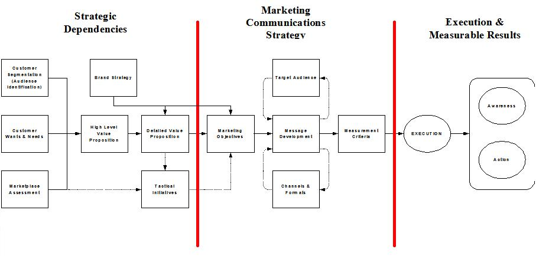

The diagram above illustrates the overall approach to developing a Marketing Communications Strategy. It is
important to recognize that there are some key strategic dependencies to completing the Marketing Communications
Strategy work product, which may vary based on the scope of the engagement or initiative (a new product launch versus a
corporate marketing strategy, for example). The strategic dependencies are outlined below in more detail:
• Vision (not shown in diagram)
Are there clear objectives behind the proposed change/development? Is the client team united in its quest to
achieve them? In essence, do people know where they’re going and why – it will be very difficult to produce a clear
Marketing Communications Strategy in an environment that does not have a clear vision of the end result.
• Customer segmentation
What customer segment(s) is the Marketing Communications Strategy targeting - the existing customer base, a
subset of the existing customer base, or completely new customers, or switchers from a competitive brand/service? If
the existing customer base is being segmented, what information is being used to segment it; e.g., behavioural,
attitudinal, socio-economic, or geographical?
• Customer wants and needs
Are the proposed changes/developments in response to customer demand/need? If so, how has the information been
gathered; e.g., external paper, commissioned research, interviews, account manager opinion? Are the developments or
proposed changes designed, for example, to cut costs on the part of the client? Is there an indication of how the
customers will react? This type of information is critical to forming the content of any Marketing Communications
Strategy.
• Marketplace assessment (or Market Structure Analysis)
How much knowledge does the client have of industry trends, its competitors’ plans and alliance partners?
Research of this nature can significantly affect the slant of a Marketing Communication Strategy. For example, an
indication that competitors are planning similar changes/developments may affect launch timings, how messages are
delivered to the marketplace, and/or emphasis of value proposition(s).
• Brand strategy (including positioning and brand outline)
This area is concerned with the client’s longer-term objectives. For example, is there an overall brand strategy
that the Marketing Communications Strategy should dovetail or complement? Lack of clarity in this area can lead to
ambiguity and dilution of the existing brand.
• Value proposition
Before anything can be marketed either internally or externally, the proposition to the customer must be clear
and explicit to both the client and the project team. The potential business impacts on internal staff, suppliers and
partners should also be outlined and considered.
• Tactical Initiatives
Is any change in price anticipated; and if so, will it be a flat-rate change, channel-specific, segment-specific
or relationship-specific? If the answer to this question is yes, how does the client perceive this change being
received by customers and/or suppliers? Is there a way that the benefits can be outlined positively? This is a
potentially critical area that may need to be addressed carefully within the Marketing Communications Strategy.
Is there an understanding of timescales, commitments to stakeholders, marketplace etc? It is important the
client shares with the project team any information of this nature so that the Marketing Communications Strategy can
accurately reflect the client’s current plans. If stakeholders have been identified, obtaining their support and buy-in
to the Marketing Communications Strategy is a desirable first step forward. Alienation and miscommunication to key
internal parties from the outset will not bode well for any Marketing Communications Strategy.
Once the strategic dependencies described previously have been met, the Marketing Communications Strategy can be
developed. Some of the tasks included in developing a Marketing Communications Strategy are explained below in
more detail:
• Marketing Objectives
Identify the objectives of the program and the course of action the audience should take after exposure to the
communications activity and what phase of the customer lifecycle this is within (e.g., purchasing, transacting,
servicing or account management, etc.). The call to action may be dialling a call centre number, using a postage paid
envelope, visiting a URL, using one channel over another, etc. Ensure that the call to action is clear and
succinct.
• Target Audience
Identify the audience(s) you want to reach with the program – customers, shareholders, partners, employees,
etc.
• Message Development
Consider each target audience and what they need to know to be persuaded (strongest drivers and critical
information that will benefit them). To ensure consistency across audiences, develop key messages that can be delivered
to all audiences, then develop audience-specific proof points to bolster these messages. For maximum
effectiveness, messages should be tested in focus groups, to make sure phrasing has the intended results.
• Channels and Formats
Consider which delivery channel(s) and what delivery technique(s) would best deliver your message to each
audience (e.g., if your target audience is business partners, then a speech at a partner meeting, a direct mail
campaign and one-on-one meetings with key partners might be in order).
• Execution
Use the tactical outline and timeline for plan execution to guide the process – communicate early and often to
the client if actions are required on their behalf or if plans need to be modified because of changing market
situations.
• Measurement Criteria
Delivering the message is only half of the communications process. Ensuring that a desired action is taken and
soliciting feedback are equally important to the process.
Make sure that you identify the success criteria for each objective of the plan. For each objective outlined in the
plan, how will you know if you are successful? For example, the measurement for a direct mail campaign could be a 5
percent response rate. Make sure that systems are in place to make these measurements (e.g., is there a way to track
call volume?).
Measurement criteria can include:
Awareness – Communications activity (such as advertising) may not be specifically focused on “shifting product”
or acquiring customers but on building brand awareness. This must also be measurable and is usually validated by
conducting pre- and post-campaign audience testing.
Action – Response volumes to the communications activity in terms of channel load, stock availability, staff
availability, etc. Communications activity should be made known in advance to those areas of the business impacted by
the results (e.g., if ad campaign asks customers to “call now”, are telesales lines adequately staffed to handle
increased call volumes?) Action may come in the form of the planned call to action or feedback on the delivery, message
or value proposition. Both must be measurable.
|